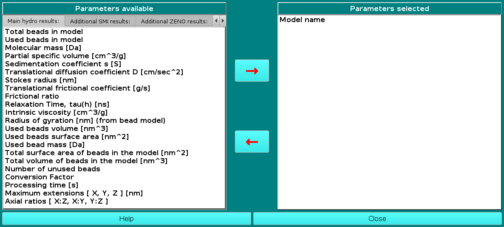

| |
Manual |

In this module you can select a series of parameters that can be saved in a comma-separated file (extension .csv) at the end of the hydrodynamic computations. The module consists of eight, tab-selectable screens where the parameters are subdivided according to their origin and characteristics. The parameters can be toggled from one window of the panel to the other (left side, list of parameters available; right side, parameters to be saved) by clicking on them (multiple selection available; you can scroll down while keeping pressed the central mouse button to select a contiguos series of parameters) and then using the arrows present between the two windows.
The eight screens are Main hydro results:, Additional SMI results:, Additional ZENO results:, Additional GRPY results:, Additional vdW results:, Solvent conditions:, ASA results and options:, and Fractal Dimension:. Note that the order by which you select the parameters (i.e. the order by which they appear in the right-side window) will be their order in the saved file. The Model name "parameter" is the only one which is fixed, alwas available and not selectable, because it will be used to distinguish the results of individual models when multiple models (such as from NMR-style files) are analyzed in a single run.
The Main hydro results: screen contains all parameters which are listed in the Show Hydrodynamic Calculations pop-up window, plus some other general parameters i.e.:
Total beads in model
Used beads in model
Molecular mass [Da]
Partial specific volume [cm^3/g]
Sedimentation coefficient s [S]
Translational diffusion coefficient D [cm^2/sec]
Stokes radius [nm]
Translational frictional coefficient [g/s]
Frictional ratio
Relaxation time tau(h) [ns]
Intrinsic viscosity [cm^3/g]
Radius of gyration [nm] (from bead model)
Used beads volume [nm^3]
Used beads surface area [nm^2]
Used bead mass [Da]
Total surface area of beads in the model [nm^2]
Total volume of beads in the model [nm^3]
Number of unused beads (this differs from what is reported in the *.hydro_res file because the used beads are already listed in the Main hydro results panel)
Conversion Factor
Processing time [s]
Maximum extensions [X, Y, Z]
Axial ratios [X:Z, X:Y, Y:Z]
The Additional SMI results: screen contains all the other parameters which are reported in the *.hydro_res file:
Centre of resistance [X, Y, Z] [nm] (X, Y, Z coordinates saved)
Centre of mass [X, Y, Z] [nm] (X, Y, Z coordinates saved)
Centre of diffusion [X, Y, Z] [nm] (X, Y, Z coordinates saved)
The Additional ZENO results: screen contains parameters that are calculated only by the ZENO method, like the standard deviations (s.d.), obtained from the averages of many blocks of independent runs:
Sedimentation coefficient s.d.
Translational diffusion coefficient D s.d.
Stokes radius s.d.
Translational frictional coefficient s.d.
Frictional ratio s.d.
Intrisic viscosity s.d.
Dt/d0
Dt/d0 s.d.
Dimensionless intrinsic viscosity [eta]
Dimensionless intrinsic viscosity s.d.
Skin Thickness
The Additional GRPY results: screen contains additional parameters that are calculated by the GRPY method:
Rotational frictional coefficient [g*cm^2/s]
Rotational diffusion coefficient [1/s]
Rotational frictional coefficent [X, Y, Z] [g*cm^2/s]
Rotational diffusion coefficent [X, Y, Z] [1/s]
Rotational Stokes' radius [X, Y, Z] [nm]
Relaxation times, tau(1) [ns]
Relaxation times, tau(2) [ns]
Relaxation times, tau(3) [ns]
Relaxation times, tau(4) [ns]
Relaxation times, tau(5) [ns]
Relaxation times, tau(m) [ns]
GRPY Einstein's radius [nm]
The Additional vdW results: screen contains information on the atomic hydration used in the bead models generation:
vdW Theoretical Waters
vdW Exposed Residues
vdW Exposed Waters
The Solvent conditions: screen contains the parameters as set in the
Hydrodynamic Calculations options module:
Solvent name
Solvent acronym
Solvent Temperature [°C]
Solvent viscosity [cP]
Solvent density [g/ml]
pH
The ASA results and options: screen contains first two parameters, derived from the ASAB1 execution, and then the settings used for the vdW with overlaps method to perform the atomic hydration and to identify the buried beads for their exclusion in the GRPY computations:
Radius of gyration (+r) [A] (from PDB atomic structure) (computed by taking into account the actual radius r of each atom)
Radius of gyration (-r) [A] (from PDB atomic structure) (computed without taking into account the actual radius r of each atom)
ASA Hydrate probe radius [A]
ASA Hydrate Threshold [A^2]
ASA vdW+GRPY probe radius [A]
ASA vdW+GRPY Threshold [&]
The Fractal Dimension: screen contains sveral parameters and information about the Dm and Ds computations:
Fractal dimension parameters
Fractal dimension
Fractal dimension s.d.
Fractal dimension weighted average
Fractal dimension weighted average s.d.
Fractal dimension weighted weighted average
Fractal dimension weighted weighted average s.d.
Rg / fractal dimension
Rg / fractal dimension s.d.
Rg / Fractal dimension weighted average
Rg / Fractal dimension weighted average s.d.
Rg / Fractal dimension weighted weighted average
Rg / Fractal dimension weighted weighted average s.d.
This document is part of the UltraScan Software Documentation
distribution.
Copyright © notice.
The latest version of this document can always be found at:
Last modified on June 13, 2024.
{kind=link}